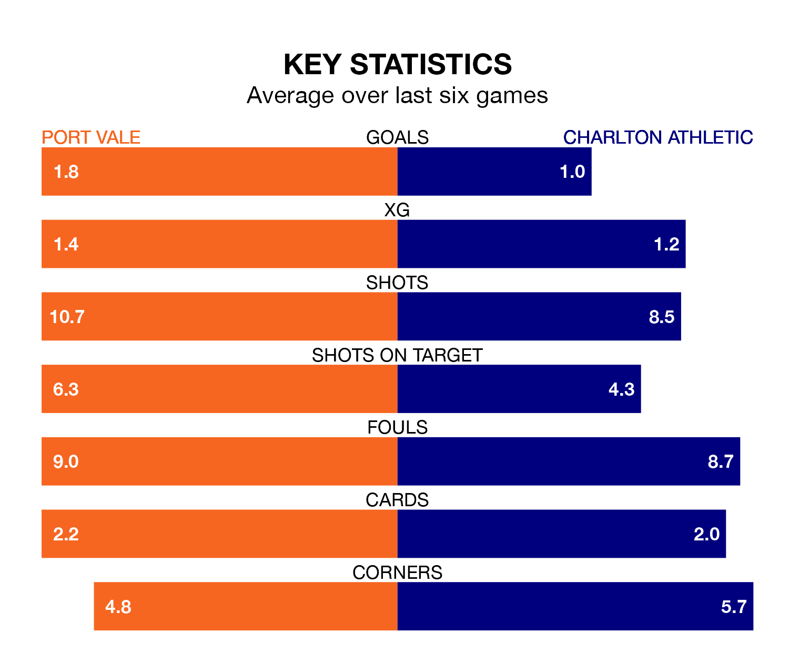

Charlton Athletic make the journey to Vale Park to play Port Vale on Saturday looking to pick up points to end their three-game losing streak.
Charlton's struggles have left them with just three points from their last six EFL League One matches, while their opponents have earned 10 from a possible 18.
In Alfie May, Charlton have the league's most on-form striker so far this season. He has notched 15 goals in 22 appearances.
His goal rate of one every 131 minutes is quicker than that of Ben Garrity, Vale's top scorer with a goal every 208 minutes, and a total of nine goals in 23 games.
With 25 goals in 24 games so far this season, the Valiants are scoring at below the league average rate with 1.0 goals per game. And they are conceding more than average, letting in 35 goals at a rate of 1.5 per game.
Athletic, meanwhile, are above average scorers, with 1.5 goals per game, compared to a league average of 1.3. They have conceded 1.4 goals per game.
The home side are 16th in the table after 24 games, of which they have won eight and drawn five, earning 29 points.
The Addicks are one place ahead of Vale in 15th, with seven wins and eight draws putting them on the same number of points.
In the last three years, Vale and Charlton have played each other on three occasions. Vale won two of them and Charlton one.
Their last meeting was on August 19, when Vale won 3-2 away.
Vale's last match was on Monday, a 2-1 loss against Carlisle United, with Garrity getting the goal for the Valiants.
Charlton lost 2-1 against Oxford United last time out, also on Monday, with Chem Campbell on the scoresheet.
Saturday's match will be refereed by Martin Coy, who has taken charge of six EFL League One games so far this season, issuing two red cards and booking 20 players. He has awarded four penalties.
He is yet to oversee a match featuring either Vale or Charlton this season.
Updated: 10:36, 03/01/24